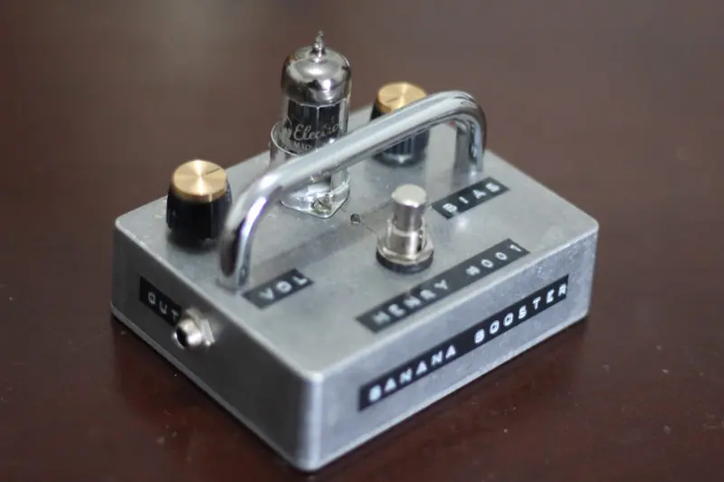
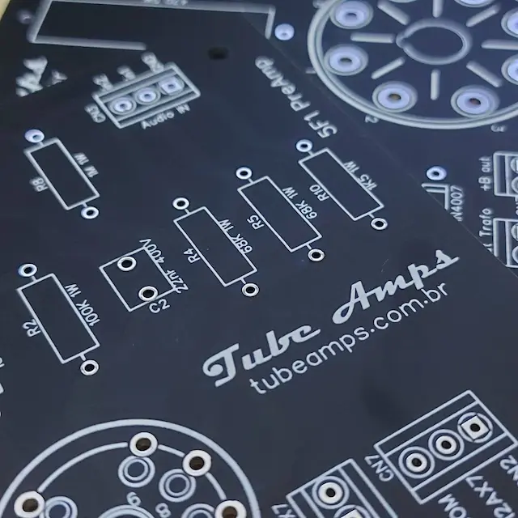
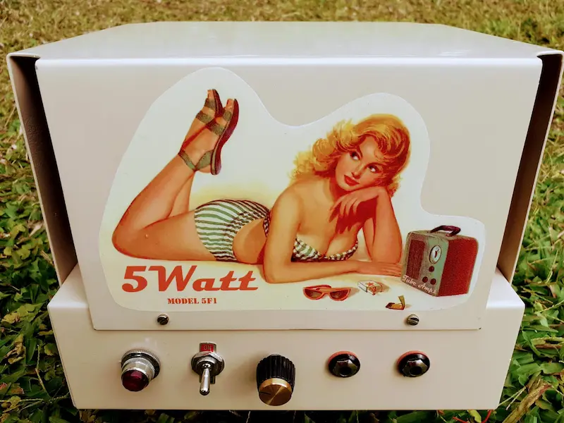

Comunidade maker de áudio analógico
Explorar artigos


Sobre
Comunidade dedicada a amplificadores valvulados e pedais analógicos.
Amplificadores
Projetos e análise
Pedais
Efeitos analógicos
DIY
Conhecimento aberto